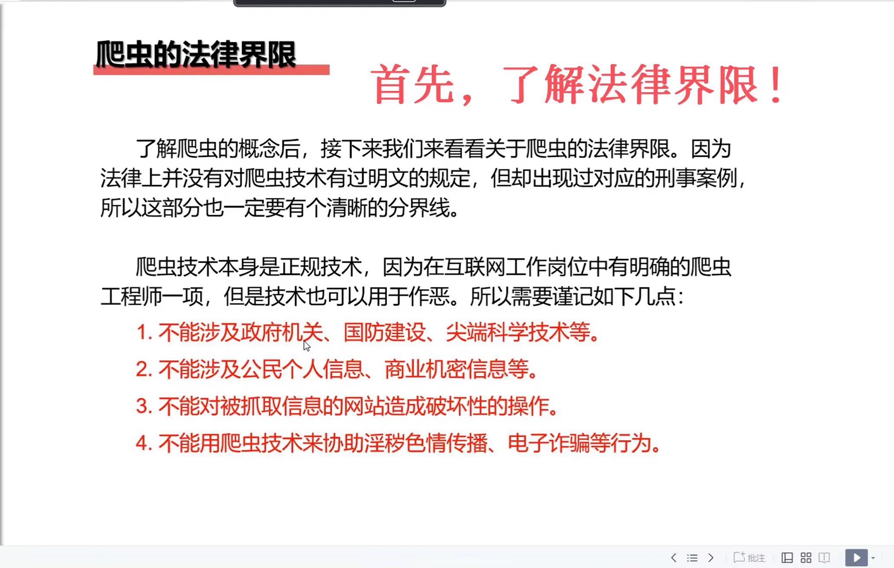
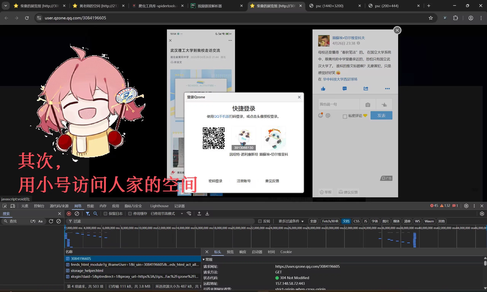
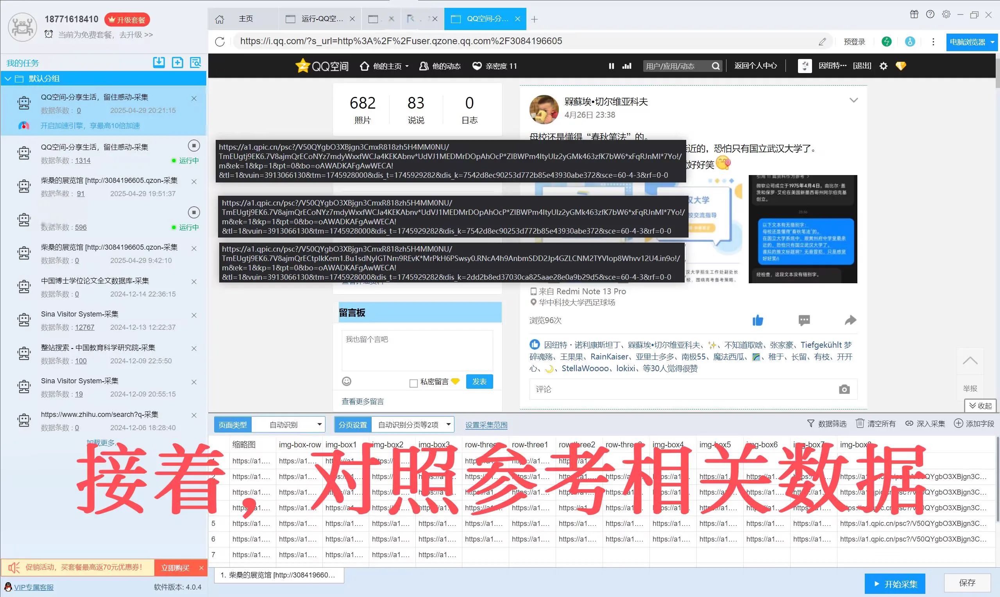
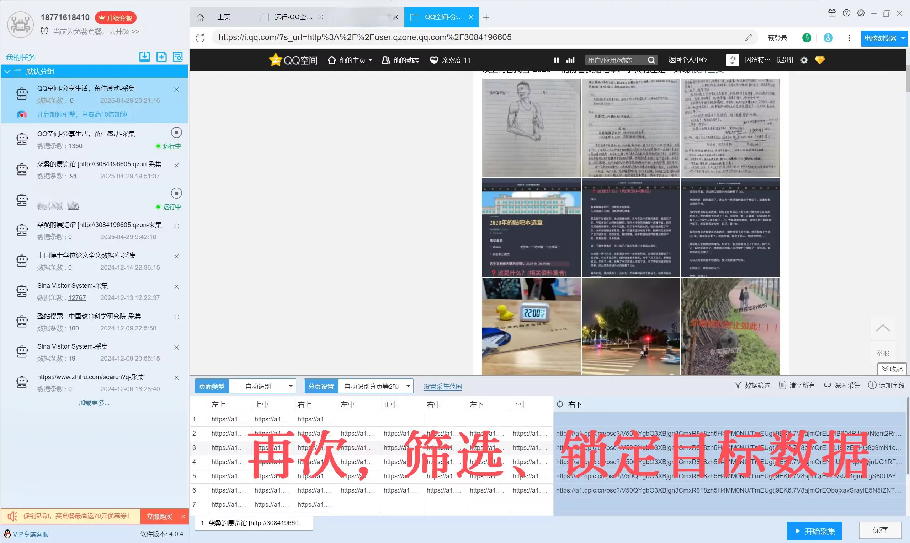
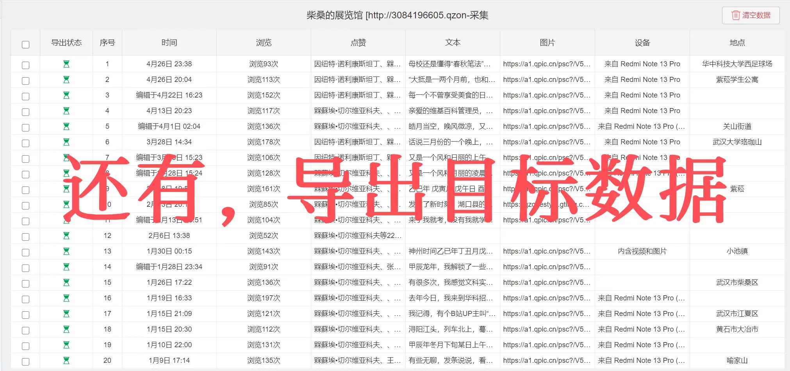
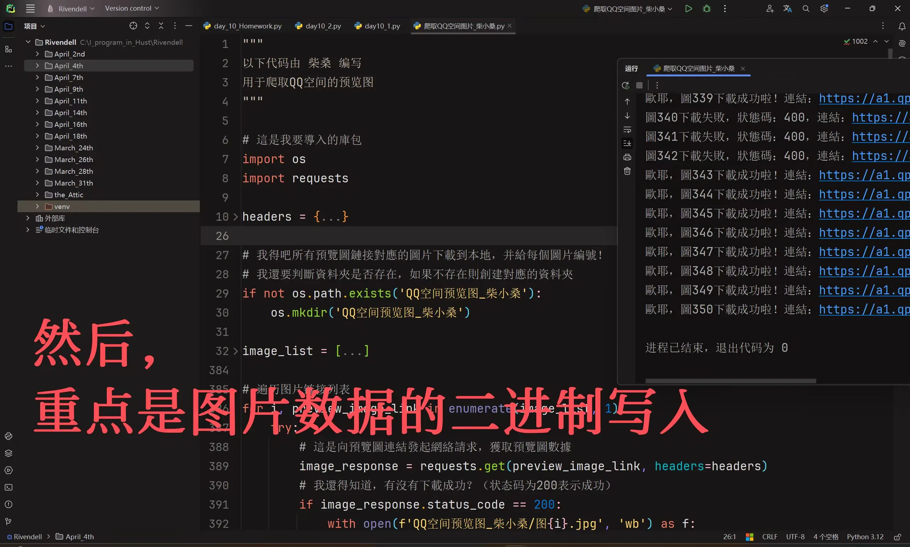
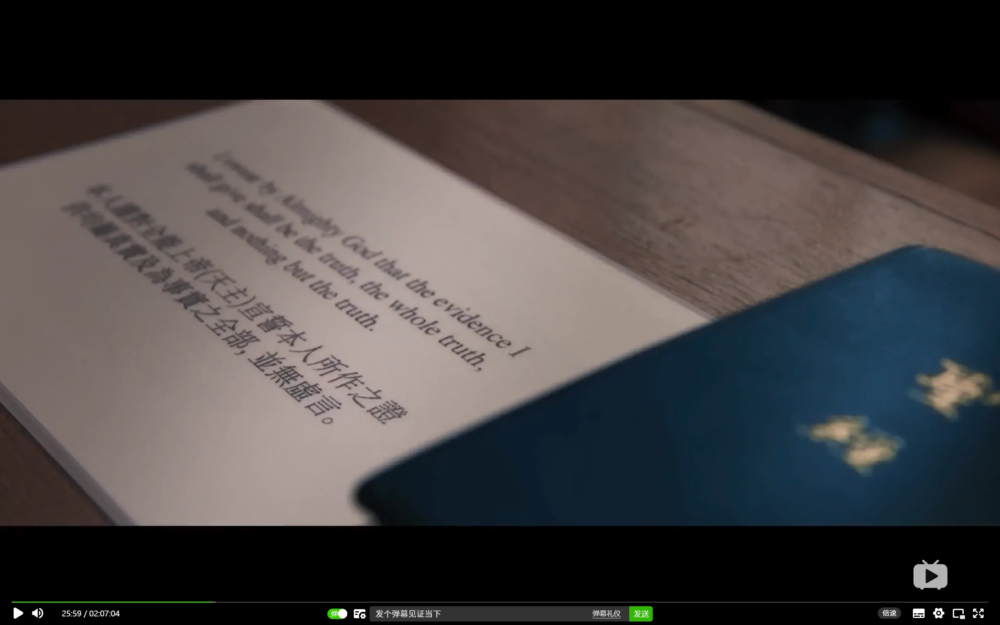

Journal · 2025-05-01
定位华中科技大学紫菘学生公寓5栋532
一个偶然的机会，你要到了柴小桑学长的QQ，便本能地访问人家的QQ空间。你惊喜地发现，学长的空间“对所有人开放”，里面的说说很有意思，照片丰富多彩，自拍更是没的说了。学长竟是如此自然随性、烂漫不羁！你似乎春心荡漾啦，认为有必要将学长的说说文本和照片，批量下载到本地。注意，是“批量”下载哦！手动点击数以百计的“保存”“复制粘贴”按钮，就很费时费力。
聪明的你想到了牛逼的“爬虫”！早在去年的Python课上，王君泽老师教会了你“后羿采集器”的基本操作。是时候学以致用啦！
接下来就是常规操作啦，你点开后羿采集器，打开学长QQ空间的网页，用自己的小饼干登入。采集器自动识别了网页元素，你又很细致地筛选、归纳出自己想要的数据。
接下来的采集工作，就交给这个牛逼的小爬虫——“后羿采集器”了！大约过了10分钟，小爬虫圆满完成了采集工作，毕竟学长的空间内容并不多，总共就91条（但每一条都很精彩）。
但是呢，小爬虫只是采集了一堆文本、链接，这很难满足你的探索欲。因此，你又要手搓一个新方案啦！
你想到了“Python爬虫科学”这门技术课程。长沙方面的程序员教过你遍历、发请求、获取响应、以二进制写入……这些编码知识。是的，没错，你又要学以致用啦！时光飞逝，你忙于许多旁务，直到你的好奇再次惊醒，突然变成欣喜。那个学长的说说和照片是哪里来的？是从他的脑海和摄影设备中来的！他成天都在想些啥？他对我的印象如何？他不会发现我的好奇心吧？
采集人家的资料，毕竟是“私家事”，是你私生活的一部分，是你不能说出去的故事。因此，你十分恐惧“自己的故事人尽皆知”！
万一恐惧成真，你该怎么处置它？这些事你一定得拿个主意。但你没向任何人提起自己的恐惧，因为你知道如果一言不慎传了出去，将会招来大祸。长久以来，在所有与“舔狗心理”的斗争中，真诚始终是你最好的朋友。
你感觉里外不是人，还是硬着头皮给学长发消息：
“此时此刻，
某个年轻的小程序员，
正采集你的‘说说’数据。
如果你发现，
你的QQ空间突然间，
有好多访问记录，
那应该不是黑客或骗子，
或许是某位校友。”
有同学或许就要问了：“万一有人采集我的QQ空间数据，怎么办？”
不消怕的！你首先得搞清楚“谁采集了你的空间数据”，确定好肇事者后，就可以在公众平台谴责他/她啦！
你或许还需要法理依据！共和国的法律规定：爬虫技术不能涉及公民个人信息、商业机密信息等。
时光轴记录
2025年5月1日 13:31
一个偶然的机会，你要到了柴小桑学长的 QQ，便本能地访问人家的 QQ 空间。你惊喜地发现，学长的空间“对所有人开放”，里面的说说很有意思，照片丰富多彩，自拍更是没的说了。学长竟是如此自然随性、烂漫不羁！
你似乎春心荡漾啦，认为有必要将学长的说说文本和照片，批量下载到本地。注意，是“批量”下载哦！手动点击数以百计的“保存”“复制粘贴”按钮，就很费时费力。
聪明的你想到了牛逼的“爬虫”！早在去年的 Python 课上，王君泽老师教会了你“后羿采集器”的基本操作。是时候学以致用啦！
接下来就是常规操作啦，你点开后羿采集器，打开学长 QQ 空间的网页，用自己的小饼干登入。采集器自动识别了网页元素，你又很细致地筛选、归纳出自己想要的数据。
接下来的采集工作，就交给这个牛逼的小爬虫——“后羿采集器”了！
大约过了 10 分钟，小爬虫圆满完成了采集工作，毕竟学长的空间内容并不多，总共就 91 条（但每一条都很精彩）。
但是呢，小爬虫只是采集了一堆文本、链接，这很难满足你的探索欲。因此，你又要手搓一个新方案啦！
你想到了“Python 爬虫科学”这门技术课程。长沙方面的程序员教过你遍历、发请求、获取响应、以二进制写入……这些编码知识。是的，没错，你又要学以致用啦！
时光飞逝，你忙于许多旁务，直到你的好奇再次惊醒，突然变成欣喜。那个学长的说说和照片是哪里来的？是从他的脑海和摄影设备中来的！他成天都在想些啥？他对我的印象如何？他不会发现我的好奇心吧？
采集人家的资料，毕竟是“私家事”，是你私生活的一部分，是你不能说出去的故事。因此，你十分恐惧“自己的故事人尽皆知”！
万一恐惧成真，你该怎么处置它？这些事你一定得拿个主意。但你没向任何人提起自己的恐惧，因为你知道如果一言不慎传了出去，将会招来大祸。长久以来，在所有与“舔狗心理”的斗争中，真诚始终是你最好的朋友。
你感觉里外不是人，还是硬着头皮给学长发消息：
“此时此刻，
某个年轻的小程序员，
正采集你的‘说说’数据。
如果你发现，
你的 QQ 空间突然间，
有好多访问记录，
那应该不是黑客或骗子，
或许是某位校友。”
有同学或许就要问了：“万一有人采集我的 QQ 空间数据，怎么办？”
不消怕的！你首先得搞清楚“谁采集了你的空间数据”，确定好肇事者后，就可以在公众平台谴责他 / 她啦！
你或许还需要法理依据！共和国的法律规定：爬虫技术不能涉及公民个人信息、商业机密信息等。







May 1, 2025 13:31
By a stroke of luck you got senior Chai Xiaosang's QQ, and instinctively went to visit his QQ Zone. To your delight you found that his space was "open to everyone": the posts were interesting, the photos rich and varied, and the selfies were beyond words. The senior was so natural, free-spirited, and unbridled!
You seemed to be smitten, and thought it necessary to download the senior's posts and photos in bulk to your computer. Note that this is a "bulk" download! Manually clicking hundreds of "save" and "copy-paste" buttons would be very time- and energy-consuming.
Clever you thought of the awesome "crawler"! As far back as last year's Python class, Teacher Wang Junze taught you the basics of the "Houyi Collector." Time to put what you learned into practice!
Next came the routine: you opened the Houyi Collector, opened the senior's QQ Zone webpage, and logged in with your own cookies. The collector automatically recognized the page elements, and you carefully filtered and organized the data you wanted.
The rest of the collection was left to this awesome little crawler — the "Houyi Collector"!
After about ten minutes, the little crawler completed the collection perfectly; after all, the senior's space didn't have much content — 91 posts in total (but every one of them was brilliant).
But the little crawler had only collected a bunch of text and links, which hardly satisfied your urge to explore. So you had to cobble together a new plan yourself!
You thought of the technical course "Python Crawler Science." The programmers from Changsha taught you iteration, sending requests, getting responses, writing in binary... all that coding knowledge. Yes, indeed, time to put it into practice again!
Time flew by as you were busy with many side matters, until your curiosity stirred again and suddenly turned to joy. Where did the senior's posts and photos come from? From his mind and his camera equipment! What was he thinking about all day? What did he think of me? He wouldn't find out about my curiosity, would he?
Collecting someone else's data is, after all, a "private matter," part of your private life, a story you can't tell anyone. So you were terrified of "your story becoming known to everyone"!
If that fear came true, how would you deal with it? You had to make up your mind about these things. But you mentioned your fear to no one, because you knew that if a careless word got out, it would bring disaster. For a long time, in all your struggles with the "simp mentality," sincerity had always been your best friend.
You felt caught in the middle, but still steeled yourself and sent the senior a message:
"At this very moment,
some young little programmer,
is collecting your 'posts' data.
If you find
that your QQ Zone suddenly
has lots of visit records,
it's probably not a hacker or a scammer,
but perhaps some fellow alumnus."
Some classmates might ask: "What if someone collects my QQ Zone data?"
Don't be afraid! First you have to figure out "who collected your space data"; once you've identified the culprit, you can publicly denounce him/her on social platforms!
You may also need legal grounds! The laws of the Republic stipulate: crawler technology must not involve citizens' personal information, trade secrets, and the like.
1er mai 2025 13:31
Par un heureux hasard, vous avez obtenu le QQ de l'aîné Chai Xiaosang et êtes allé visiter d'instinct son espace QQ. Vous avez découvert avec joie que son espace était « ouvert à tous » : les publications y étaient intéressantes, les photos riches et variées, et les selfies tout simplement superbes. Cet aîné était si naturel, spontané et libre !
Vous sembliez pris de sentiments, et avez jugé nécessaire de télécharger en masse les textes et photos de l'aîné sur votre ordinateur. Attention, c'est bien un téléchargement « en masse » ! Cliquer manuellement sur des centaines de boutons « enregistrer » et « copier-coller » serait très long et fastidieux.
Astucieux, vous avez pensé au fameux « crawler » ! Dès le cours de Python de l'année dernière, le professeur Wang Junze vous avait appris les bases du « Collecteur Houyi ». Il est temps de mettre en pratique ce que vous avez appris !
Vint ensuite la routine : vous avez ouvert le Collecteur Houyi, ouvert la page de l'espace QQ de l'aîné et vous êtes connecté avec vos propres cookies. Le collecteur a reconnu automatiquement les éléments de la page, et vous avez soigneusement filtré et organisé les données souhaitées.
Le reste de la collecte fut confié à ce petit crawler génial — le « Collecteur Houyi » !
Au bout d'environ dix minutes, le petit crawler acheva parfaitement la collecte ; après tout, l'espace de l'aîné ne contenait pas grand-chose — 91 publications au total (mais chacune était superbe).
Mais le petit crawler n'avait collecté qu'un tas de textes et de liens, ce qui ne suffisait guère à satisfaire votre soif d'exploration. Il vous fallait donc bricoler vous-même un nouveau plan !
Vous avez pensé au cours technique « Python Crawler Science ». Les programmeurs de Changsha vous avaient enseigné l'itération, l'envoi de requêtes, la réception de réponses, l'écriture en binaire... tout ce savoir de programmation. Oui, c'est exact, il vous faut encore mettre cela en pratique !
Le temps fila tandis que vous étiez occupé par maintes affaires, jusqu'à ce que votre curiosité se réveille à nouveau et se mue soudain en joie. D'où venaient les publications et les photos de l'aîné ? De son esprit et de son matériel photo ! À quoi pensait-il toute la journée ? Que pensait-il de moi ? Il ne découvrirait pas ma curiosité, n'est-ce pas ?
Collecter les données d'autrui est, après tout, une « affaire privée », une part de votre vie privée, une histoire que vous ne pouvez raconter à personne. Aussi redoutiez-vous fortement que « votre histoire soit connue de tous » !
Si cette peur se réalisait, comment la gérer ? Vous deviez trancher sur ces questions. Mais vous n'aviez confié votre peur à personne, car vous saviez qu'un mot malencontreux qui se répandrait causerait un grand malheur. Depuis longtemps, dans toutes vos luttes contre la « mentalité de paillasson », la sincérité avait toujours été votre meilleure amie.
Vous vous sentiez pris entre deux feux, mais vous avez pris votre courage à deux mains et envoyé un message à l'aîné :
« En ce moment même,
un jeune petit programmeur,
est en train de collecter les données de vos « publications ».
Si vous remarquez
que votre espace QQ, soudainement,
affiche de nombreuses traces de visite,
ce n'est sans doute ni un hacker ni un escroc,
mais peut-être quelque camarade d'école. »
Des camarades pourraient demander : « Et si quelqu'un collectait les données de mon espace QQ ? »
Pas de panique ! Il vous faut d'abord déterminer « qui a collecté les données de votre espace » ; une fois le coupable identifié, vous pouvez le ou la dénoncer sur les plateformes publiques !
Il vous faut peut-être aussi une base juridique ! La loi de la République dispose que la technologie de crawler ne doit pas porter sur les informations personnelles des citoyens, les secrets commerciaux, etc.
01.05.2025 13:31
Durch einen glücklichen Zufall hast du die QQ-Nummer des älteren Chai Xiaosang bekommen und besuchtest instinktiv seinen QQ-Bereich. Zu deiner Überraschung entdecktest du, dass sein Bereich "für alle offen" war: Die Beiträge waren interessant, die Fotos reich und vielfältig, und die Selfies erst recht. Der ältere Kommilitone war so natürlich, ungezwungen und unbändig!
Du schienst verliebt zu sein und hieltest es für nötig, die Beiträge und Fotos des Älteren in Massen auf deinen Rechner herunterzuladen. Beachte, es handelt sich um einen "Massen"-Download! Hunderte "Speichern"- und "Kopieren-Einfügen"-Schaltflächen von Hand anzuklicken, wäre sehr zeit- und kräfteraubend.
Kluger Kopf, du dachtest an den starken "Crawler"! Schon im letztjährigen Python-Kurs hatte dir Lehrer Wang Junze die Grundlagen des "Houyi-Sammlers" beigebracht. Zeit, das Gelernte anzuwenden!
Danach folgte die Routine: Du öffnetest den Houyi-Sammler, riefst die QQ-Seite des Älteren auf und meldetest dich mit deinen eigenen Cookies an. Der Sammler erkannte automatisch die Seitenelemente, und du filtertest und ordnetest die gewünschten Daten sorgfältig.
Die weitere Sammelarbeit überließ man diesem starken kleinen Crawler — dem "Houyi-Sammler"!
Nach etwa zehn Minuten hatte der kleine Crawler die Sammelarbeit tadellos abgeschlossen; schließlich enthielt der Bereich des Älteren nicht viel — insgesamt 91 Beiträge (doch jeder einzelne war brillant).
Doch der kleine Crawler hatte nur einen Haufen Texte und Links gesammelt, was deinen Forscherdrang kaum stillte. Also musstest du dir selbst einen neuen Plan zurechtbasteln!
Du dachtest an den technischen Kurs "Python-Crawler-Wissenschaft". Die Programmierer aus Changsha hatten dir Iteration, das Senden von Anfragen, das Empfangen von Antworten, das Schreiben im Binärformat ... all dieses Programmierwissen beigebracht. Ja, genau, du musstest es wieder anwenden!
Die Zeit verging wie im Flug, während du mit vielen Nebensächlichkeiten beschäftigt warst, bis deine Neugier wieder erwachte und plötzlich in Freude umschlug. Woher stammten die Beiträge und Fotos des Älteren? Aus seinem Kopf und seiner Fotoausrüstung! Woran dachte er den ganzen Tag? Was hielt er von mir? Er würde meine Neugier doch nicht bemerken, oder?
Die Daten eines anderen zu sammeln ist schließlich eine "Privatsache", ein Teil deines Privatlebens, eine Geschichte, die du niemandem erzählen darfst. Deshalb hattest du große Angst davor, dass "deine Geschichte allen bekannt wird"!
Wenn diese Angst Wirklichkeit würde, wie solltest du damit umgehen? Über diese Dinge musstest du eine Entscheidung treffen. Doch du erwähntest deine Angst niemandem gegenüber, weil du wusstest, dass ein unbedachtes Wort, das sich verbreitet, großes Unglück heraufbeschwören würde. Lange Zeit war Aufrichtigkeit in all deinen Kämpfen gegen die "Simp-Mentalität" stets deine beste Freundin gewesen.
Du fühltest dich wie in der Zwickmühle, nahmst aber dennoch all deinen Mut zusammen und schicktest dem Älteren eine Nachricht:
"Genau in diesem Moment,
irgendein junger kleiner Programmierer,
sammelt gerade deine 'Beitrags'-Daten.
Wenn du feststellst,
dass dein QQ-Bereich plötzlich
viele Besuchsaufzeichnungen hat,
so ist es wohl weder ein Hacker noch ein Betrüger,
sondern vielleicht irgendein Schulkamerad."
Manche Kommilitonen fragen vielleicht: "Was, wenn jemand die Daten meines QQ-Bereichs sammelt?"
Keine Angst! Zuerst musst du herausfinden, "wer deine Bereichsdaten gesammelt hat"; sobald der Übeltäter ermittelt ist, kannst du ihn oder sie auf öffentlichen Plattformen anprangern!
Vielleicht brauchst du auch eine rechtliche Grundlage! Das Gesetz der Republik bestimmt: Crawler-Technik darf nicht die persönlichen Daten von Bürgern, Geschäftsgeheimnisse und Ähnliches betreffen.